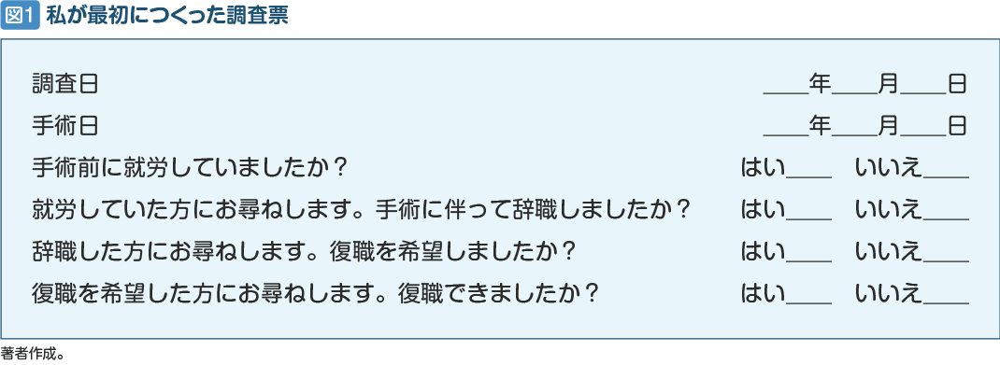
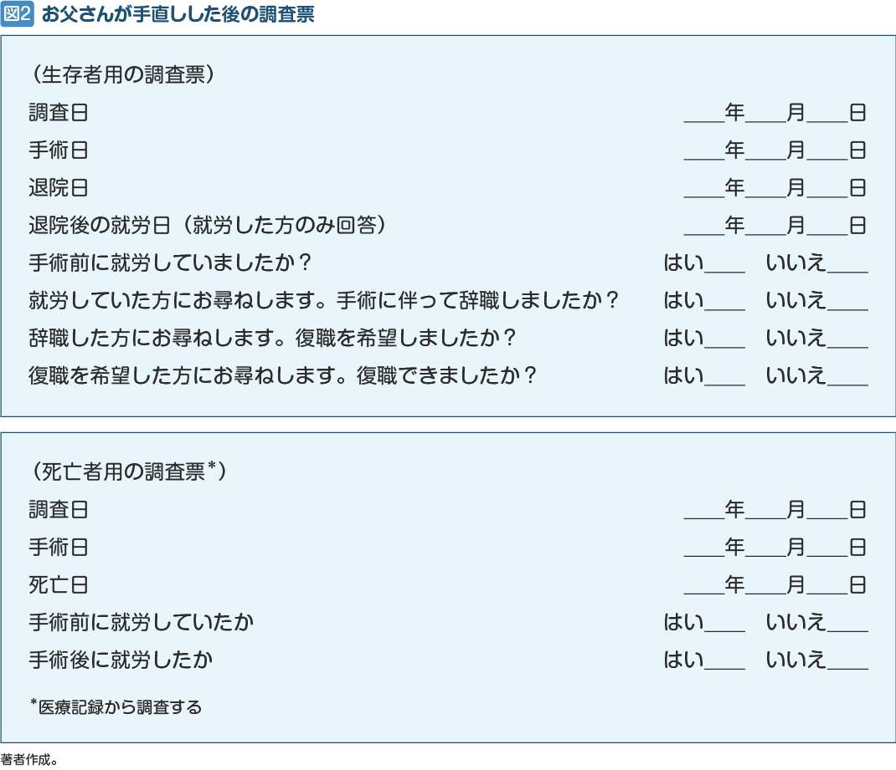

Story and Quiz − Study design IV
Keywords: OS/PFS/DFS/response, generalized linear model, survival/competing-risk, observational study
調査項目とデータの型
私「今、話しかけていいかな、お父さん。がんサバイバーの復職率を調査する話があったでしょ。患者さんに送る調査票をつくってみたんだけど、見てくれる？」
お父さん「どれどれ」

お父さん「復職率の定義はなに？」
私「どういうこと？」
お父さん「調査票を見ただけじゃ、この質問項目で十分かどうかわからないってこと。手術日から調査日の間に、復職を希望した患者さんが、希望どおり復職できたかどうかを調べたいのかな？」
私「それもいいんだけど、復職を希望してないって回答した患者さんのなかに、会社の方針などの理由で復職をあきらめた患者さんも含まれるかもしれない。だから、復職率を計算するとき、分母は、復職を希望した患者さんじゃなくて、手術を受けた患者さん全員にしたいわ。そうした方が、就労実態がわかりやすそうだもの」
お父さん「手術日から調査日の間の復職を調べたいかどうかについては？」
私「えーっと。調査票に回答してもらうタイミングは患者さんによってまちまちになりそうだから、調査日は使いたくない。1年以内に復職できるかを定義にするのはどうかな？あ！ 復職日を答えてもらえばいいのかも！」
お父さん「復職日はあった方がいいよね。そうすると、復職状況から解析用の“変数”をつくるには、分類データと生存時間データの2通りが考えられる。それはさておき、手術後に亡くなった場合はどうするの？」
私「入院中に亡くなった場合は、調査対象に含めない。でも、術後再発による死亡を分母から除外するのは変な気がする」
お父さん「そうだね。除外するとバイアスが生じると思う。がん患者さんを追跡するような臨床研究では、大切なことが3つある。1つ、どのタイミングを時間原点 （time origin）にするかを決める必要があるよね。この場合、時間原点は退院日にするといい。2つ、追跡期間の目標を設定して、その時点までは、可能な限り情報を収集すること。 情報が取れないとバイアスが生じる原因になる。3つ、時間原点後の死亡は除外してはならない」
私「後からバイアスがあるとか言われたくないもんね。ふむふむ」
お父さん「以前、“PECO”という要素を使って臨床疑問を構造化したらってアドバイスしたよね。Pが根治切除後の直腸がん患者さんだったら、その集団をもれなく調査しないといけない」
私「分類データと生存時間データってなに？」
お父さん「これもこの前話したでしょ。統計解析を行ううえで基本になるのが“データの型”で、分類データと生存時間データはその種類だよ」
私「いや、先週の話だし、私忙しいし」
お父さん「調査票を少し手直ししたから、これを使ってもう一度話すよ」

お父さん「分類データは、この場合、患者のアウトカムを分類したものだよ。1年以内に復職したかどうかをアウトカムにしたらどうかなっていってたよね」
私「うん」
お父さん「たとえば、“1年以内に復職あり”を分類1、“1年以内に復職なし”を分類2にしたら、2値データと呼ばれる分類データの一種になる。これは調査票から調べられるし、復職率も計算できるよね」
私「うん。1年以内の死亡を復職なしって扱えばね」
お父さん「でも就労状況を集計するときは2値データではなく、3カテゴリの分類データの方がいい。“1年以内に復職あり”を分類1、“1年以内に復職なし（死亡以外の理由のため）”を分類2、“1年以内に復職なし（死亡のため）”を分類3にしたらどう？もっと詳細にアウトカムが把握できるでしょ」
私「うんうん。じゃあ生存時間データはなんだっけ？OSってこと？」
お父さん「たしかに全生存期間（OS）は生存時間データの一種だよ。名前から誤解されがちだけど、それ以外にもあるんだ。生存時間データがどういうものかっていうと、時間原点から“イベント”までにかかった時間を表す変数のこと」
私「復職状況も生存時間データになるの？」
お父さん「そうすることもできる。この場合は、“退院日から復職日までの期間”を考えればいい。たとえばね、4月1日に退院して、4月30日に復職したとしたら、この患者の生存時間データは30-1+1=30日になる。これだとただの日数だから、連続データとの違いがはっきりしないけど、生存時間データのポイントは、打ち切り （censoring）があることなんだ。調査日までに復職しなかった場合、退院日から復職日までの期間は存在しないでしょ」
私「まあそうだけど、それでいいんじゃないの？」
お父さん「統計解析のソフトウェアを使うとき一工夫が必要で、調査日までに復職しなかったという情報を、入力してあげなければならない。だから生存時間データは、“時間変数”と“打ち切り変数”という2つの変数が組になっているんだ。打ち切り変数は、“イベントが観察された”、“イベントが観察される前に打ち切りになった”を表す2値データ。時間変数は、この場合は“退院日から復職日までの期間”か“退院日から調査日までの期間”のどちらかになる」
私「えーっと、打ち切り変数は2値データってことは、すべての患者さんで復職か、打ち切りかの2択しかないってこと？死亡はどうなるの？」
お父さん「いま話したような扱いをするなら、死亡した患者さんは、打ち切りという分類に含まれることになる。ただし、競合リスク （competing risk）という別の扱い方もある。簡単に言うと、それが起こると研究で調べたいイベント（たとえば死亡や復職）が観察されなくなる、競合するイベントのことだよ。競合リスクを考慮すると、打ち切り変数は、“イベントが観察された”、“イベントが観察される前に競合リスクが生じた”、“イベントが観察される前に打ち切りになった”という3カテゴリになる」
私「だいたいわかった。この調査票、使わせてもらうね」
データの型 アウトカムはデータの型によって4種類に分類されます。
- 連続データ （例：血圧やQOL）
- 分類データ （例：有害事象の有無）
- 計数データ （例：有害事象の発生件数）
- 生存時間データ （例：全生存期間）
さらに、分類データはいくつかの種類があり、カテゴリが2通りのものを2値データ、カテゴリに順序があるものを順序データと呼んでいます。生存時間データの一種には、競合リスクを考慮した競合リスクデータがあります。データの型によって、正規分布や2項分布など確率分布が異なりますよね。そのため、それぞれ異なる統計手法が用いられます。詳しくは表をみてください。
仮に、ストーマ造設あり・なしと復職状況の関係を調べたいとすると、2つの変数をモデルに当てはめることになるため、回帰モデルを用いて調べたいとします。このときアウトカムを復職の有無（2値データ）とするなら、ロジスティック回帰を選ぶべきです。もし復職までの期間（生存時間データ）とするなら、Cox回帰の方が適切です。
個人内で反復測定があるか
同一個人にくり返し臨床検査やアンケートを行うと、似たような検査結果になりますよね。たとえば、朝と晩に血圧を測ると、2つの測定値に相関が生じます。治療前と治療後に、QOL質問票に回答してもらう場合も、その測定値は独立ではありません。このように1人の患者に複数回の測定値があるデータを反復測定データといいます。反復測定データでは、個人内の測定値は独立ではありません。したがって、独立性を仮定している統計手法（たとえば対応のないt検定や\(\chi^2\)検定）は不適切です。反復測定データの解析では、変量効果モデル（random-effects model）や一般化推定方程式（generalized estimating equation）と呼ばれるやや高度な手法が用いられます。この場合の変量効果は、「ひとりひとりの個人の効果」を表しています。これらの方法は、個人内でデータが独立ではないこと（データの相関）を考慮するものです。
交絡の調整が必要かどうか
交絡因子（confounder）とは、治療とアウトカムとの関係を歪める第三の因子のことです。仮に、ストーマ造設あり・なしと復職状況の関係に、年齢が強くかかわっているとしましょう。そして、ストーマ保有者と非保有者で、平均年齢が異なっているとします。このような場合、2群間の年齢の違いを無視するとバイアスが生じます。これを補正するために、ロジスティック回帰がよく用いられます。 ランダム化臨床試験では、比較する群間で実験条件が揃っているため、交絡の調整は不要です。一方、観察研究（コホート研究やケース・コントロール研究）では交絡の調整は必須です。今回題材にした復職率の調査も観察研究の一種ですから、統計解析ではロジスティック回帰やCox回帰が主に用いられるでしょう。最近では交絡を調整して、正しく因果関係を調べるために、因果推論の手法（プロペンシティスコアなど）を用いることが増えてきました（田中2022）。
| データの型 | 反復測定 | 交絡調整 | 統計手法 | 備考 |
|---|---|---|---|---|
| 連続データ | なし | なし | 対応のないt検定、Wilcoxon順位和検定 | 平均の比較 |
| 個人内で2回測定 | なし | 対応のないt検定、Wilcoxon順位和検定 | 対応のあるデータ | |
| なし | なし | 正規線型モデル | 回帰モデルの一種 | |
| あり | あり | 変量効果モデル、一般化推定方程式 | 回帰モデルの一種 | |
| 2値データ | なし | なし | \(\chi^2\)検定 | 割合の比較 |
| 個人内で2回測定 | あり | McNemar検定 | 対応のあるデータ | |
| なし | あり | ロジスティック回帰 | 回帰モデルの一種 | |
| あり | あり | 変量効果モデル、一般化推定方程式 | 回帰モデルの一種 | |
| 計数データ | なし | なし | \(\chi^2\)検定 | 発生率の比較 |
| なし | あり | Poisson回帰 | 回帰モデルの一種 | |
| あり | あり | 変量効果モデル、一般化推定方程式 | 回帰モデルの一種 | |
| 生存時間データ | なし | なし | Kaplan-Meier曲線 | 生存曲線の記述 |
| なし | あり | Cox回帰 | 回帰モデルの一種 | |
| 競合リスクデータ | なし | なし | Aalen-Johansen曲線 | 累積発生率曲線の記述 |
| なし | あり | Fine-Grayモデル | 回帰モデルの一種 |
臨床検査の正常範囲の意味として正しいのはどれでしょうか。
- ある集団からのランダムサンプルにおいて検査値の平均±1.96×標準偏差
- 健常人集団における検査値の95%が含まれる範囲
- 健常人集団における検査値の平均±1.96×標準誤差
- ある集団からのランダムサンプルにおいて検査値の95%が含まれる範囲
- 正解は2です
標準偏差（SD）と標準誤差（SE）の区別が重要です。前者は「検査値自体が個人間でどのくらいばらつくか」を、後者は「平均の推定がどのくらい精確か」を表しています。そして、「平均±1.96×標準偏差」は、正規分布における「95%が含まれる範囲」に相当しています。
なお、似て非なる範囲に「平均±1.96×標準誤差」があります。これは頻度論統計学（frequentist statistics）において95%信頼区間（confidence interval）と呼ばれる区間です。